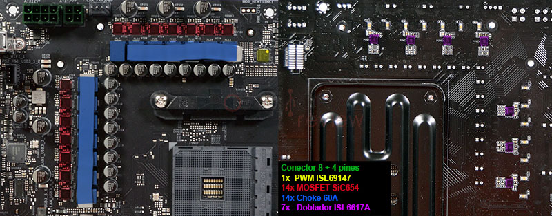
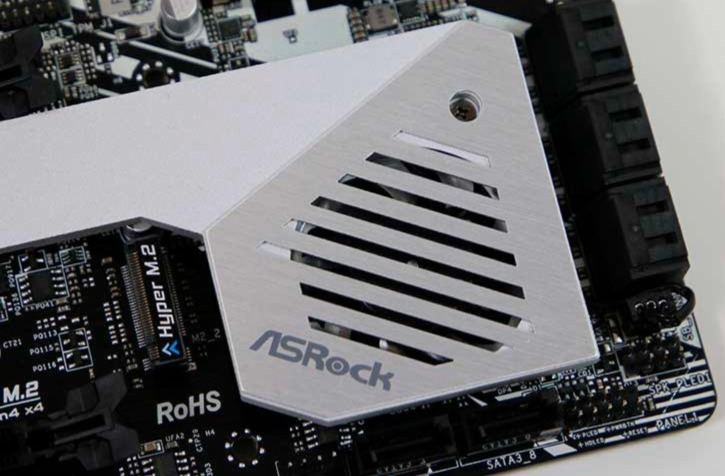

Normalmente, se le pone atención a la temperatura del procesador o de la tarjeta gráfica, olvidándonos del resto de componentes del PC. También hay que mirar la temperatura de la placa base porque es vital cuando hacemos overclock, por ejemplo.

Los VRM vienen a ser los reguladores de voltaje, y suben de temperatura cuando ponemos nuestro PC a funcionar. De hecho, muchos entusiastas atienden al comportamiento de éstos cuando quieren comprar una placa base para overclockear su procesador.
¿Por qué prestan tanta atención a los VRM? Porque todas las placas base tienen un máximo de temperatura soportado, normalmente de unos 120 grados. Cuando la placa llega a esa temperatura se apaga automáticamente para evitar que se dañe ésta.
A mayor voltaje, mayor temperatura. Aquí es donde entra la importancia de los VRM de una placa base. Aunque no os lo creáis, existen placas entusiastas o de gama alta que no tienen unos VRM muy buenos, lo que perjudica la capacidad de overclock del equipo.
En las motherboards no ocurre lo mismo que en los procesadores. Cuando un procesador funciona a temperaturas elevadas como, por ejemplo, 70 grados, se suele producir el efecto thermal throttling. El procesador baja el rendimiento para bajar de temperatura. En las placas base eso no existe, así que los usuarios sólo se fijan en el procesador = ERROR.
CUIDADO CON LA REFRIGERACIÓN LÍQUIDA: al no haber casi corriente de aire porque tenemos refrigeración líquida, los VRM se calientan aún más. Esto se puede corregir con un buen ventilador de 120 mm, por ejemplo.
¿Cómo saber las temperaturas de mis VRM? Para saberlo nuestra placa base debe incorporar un sensor para medirla. Como era de esperar, muchas placas base no incorporan este sensor, así que podemos medir su temperatura con un termómetro infrarrojo como este o vía software con Hwinfo.

Hemos visto que en las placas base de alta gama de AMD incorporaban un ventilador en la placaba pase para refrigerarla un poco porque se calentaban demasiado. Es importante observar la temperatura del chipset.